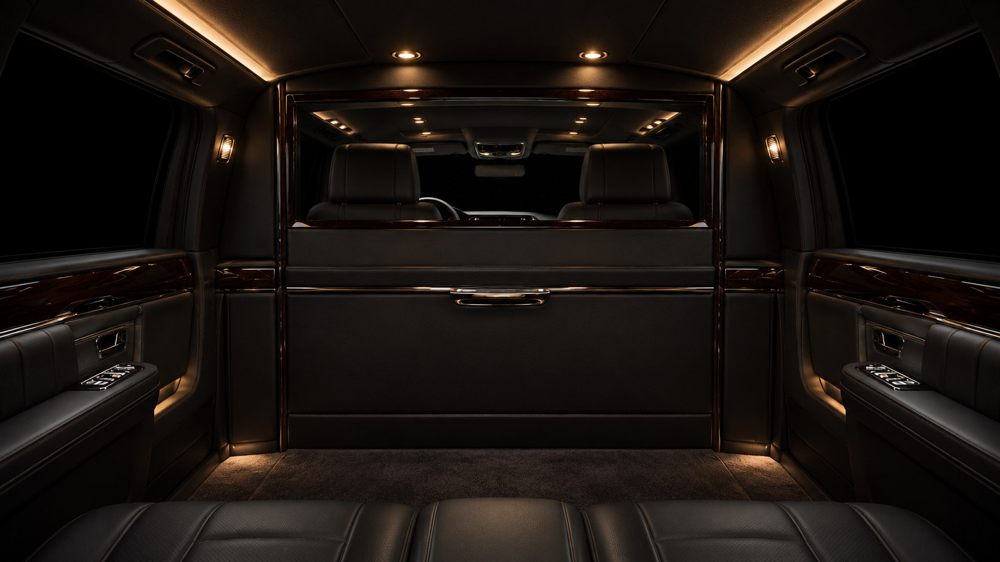
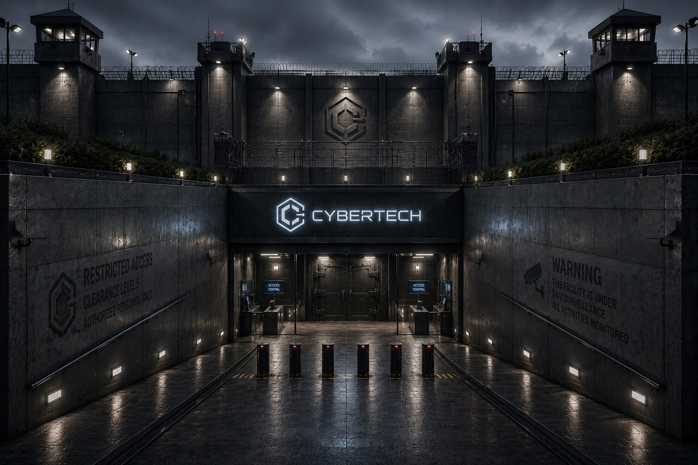
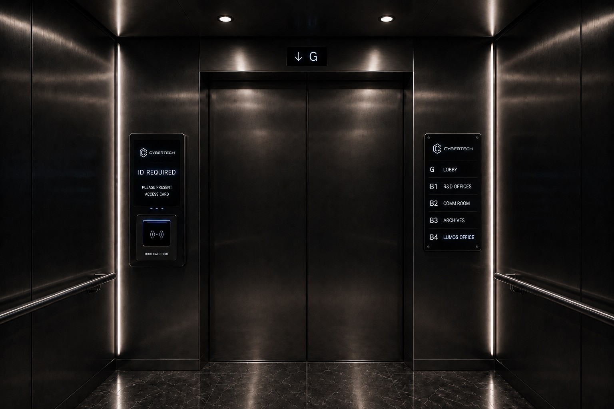
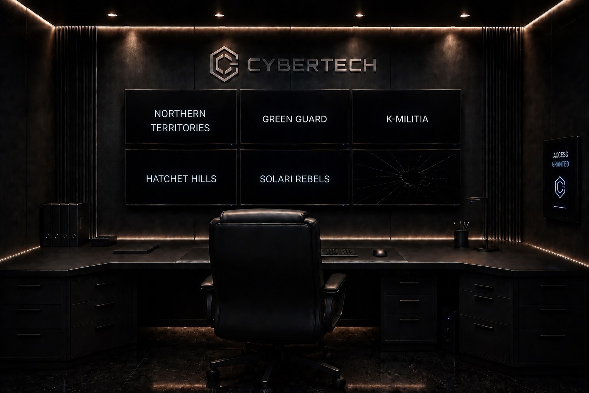
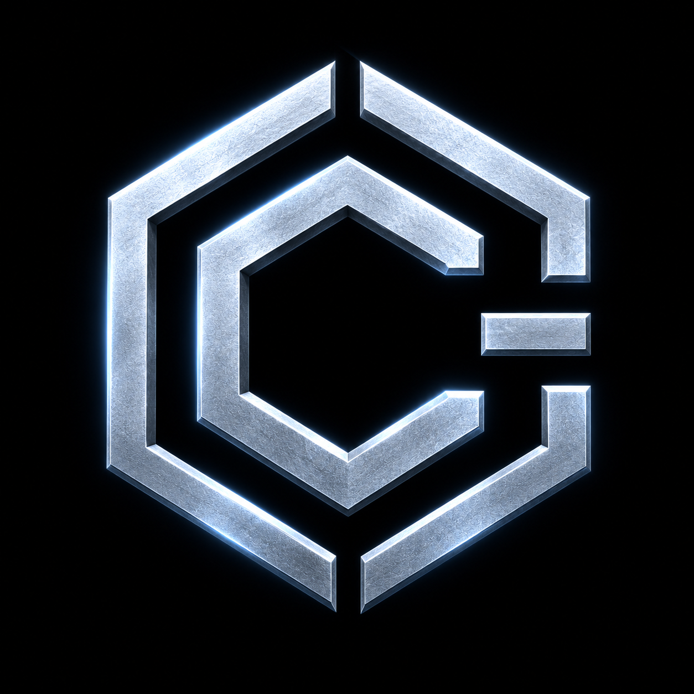

The Solari militia groups operate south of the Trench, beyond the continental frontier. Due to the hostile nature of the region and the extremely low survival rate of personnel travelling beyond the defensive line, verified intelligence remains limited. Current assessments indicate the presence of multiple independent armed groups rather than a single organised military force.
Recent activity has consisted of sporadic attacks against Trench positions and FLAME personnel assigned to the border. Recorded incidents typically involve reconnaissance, sniper fire, short assaults and rapid withdrawals, avoiding prolonged conventional engagements.
Recovered equipment indicates that Solari forces rely primarily on older firearms, locally manufactured weapons, repaired military surplus and captured battlefield equipment. Advanced surveillance systems, modern communications infrastructure and large-scale industrial production have not been observed.
Despite their technological disadvantage, Solari fighters demonstrate extensive knowledge of the southern terrain, disciplined fieldcraft and effective small-unit tactics.
Cybertech assesses the southern frontier as stable but active. No evidence currently suggests preparations for a coordinated large-scale offensive. Continued surveillance of militia activity remains an operational priority.
Captured Solari Combatant
Several years prior to the current assessment, FLAME personnel captured a wounded Solari combatant during a border operation. The prisoner was transferred to Cybertech for interrogation.
Questioning proved largely unsuccessful. The individual spoke only Solari. No verified continental speaker possessed sufficient knowledge of the language to conduct meaningful interviews. Analysts documented recurring vocabulary, phonetic patterns and speech recordings for future study, but the majority of the prisoner’s testimony remained untranslated.
The Northern Territories are designated by Cybertech as the collection of remote settlements and island communities stretching across Eurussia’s northern frontier, including the islands north of Eurussia beyond the mainland. The region has remained an operational priority due to recurring instability affecting multiple northern population centres.
Intelligence received from Commander David Whitfield indicates that mainland insurgent activity has been neutralised. Remaining hostile elements are now confined to the islands north of Eurussia, where final PMC operations are underway.
Hostile groups operating within the Northern Territories possess limited combat capability. Field intelligence identifies civilian personnel equipped primarily with hunting rifles, salvaged equipment and improvised defensive positions. No evidence has been recovered to suggest the presence of professional military training or organised logistical support.
Cybertech assesses the northern insurgency as a consequence of economic decline rather than coordinated ideological opposition. Operational reporting links the decline to the loss of manufacturing work after Parliament moved production towards Phoenix. Isolated settlements now face widespread shortages of food, fuel and essential supplies.
PMC Northern Operations Report
Following inspections conducted during the northern suppression campaign, PMC personnel documented abandoned industrial sites, deteriorating infrastructure, inactive mining operations and settlements experiencing severe shortages of basic necessities. Civilian interviews consistently identified declining living conditions as the primary source of local unrest. These findings remain the principal intelligence source supporting Cybertech’s current assessment of the Northern Territories.
Cybertech classifies Hatchet Hills as an autonomous southern province operating outside direct Phoenix authority. Historical PMC records identify Hatchet Hills as a province that should not be underestimated. The province has fought combined continental forces once and PMC forces once, retaining its sovereignty following both conflicts.
Human source reporting confirms permanent military checkpoints across all recognised border crossings. Surveillance indicates no force mobilisation beyond provincial territory. Multiple Cybertech reconnaissance drones have been destroyed during aerial collection operations, limiting intelligence gathering within the province.
PMC after-action reports identify Hatchet Hills as a defensive force built around terrain denial. Field observations confirm fortified checkpoints, elevated watchtowers, automated gate defences, steel rockfall barriers and restricted valley approaches designed to slow or prevent military advances.
Current assessments indicate that Hatchet Hills continues to honour the autonomy agreement established following the last confirmed conflict with PMC forces. No reporting currently suggests preparations for renewed hostilities.
Angel of Death
Historical PMC records reference an unidentified combatant operating within Hatchet Hills under the designation Angel of Death.
Archived combat records confirm that the individual engaged Commander David Whitfield during the closing stages of the Second Hatchet Hills Rebellion. The engagement concluded without a decisive outcome before negotiations secured Hatchet Hills’ autonomous status.
The subject’s identity, affiliation and current location remain unknown.
Status: Active investigation.
Public command records identify the Krashnov Militia, commonly referred to as the K-Militia, as commanded by Petr Romanov on Andrew Romanov’s behalf, with General Varduk as its serving general. Shared reporting from Cybertech assets and Krashnov-based sources confirms the force is divided between a city army stationed within Krashnov and provincial armies assigned throughout the surrounding territories.
Drone surveillance, field observation and human source reporting indicate a sustained increase in live-fire exercises, urban response drills and coordinated troop movements across Krashnov. No mobilisation orders have been intercepted. Current assessments suggest the force is maintaining a heightened state of operational readiness.
Cybertech analysis based on surveillance operations, hacked recruitment records and intercepted internal communications identifies the K-Militia as significantly larger than Green Guard. The force relies upon visible military presence, sustained patrols and large-scale manpower deployment to maintain control throughout Krashnov and its provinces.
Civilian reporting consistently alleges that military funding continues to receive priority over municipal investment. Recruitment figures gathered through local sources indicate that K-Militia salaries exceed those offered by civilian employment, contributing to continued enlistment despite growing public dissatisfaction. Separate reporting from trusted contacts within Krashnov identifies unresolved friction among senior command personnel. The cause and operational significance remain unconfirmed.
Krashnov Human Source Network
Cybertech maintains a limited network of civilian informants and trusted contacts within Krashnov. Reporting from these sources is routinely compared against surveillance footage, recruitment activity and publicly available government records before being incorporated into operational assessments.
Assessment: Reporting considered reliable. Continued monitoring recommended.
Public records identify the Green Guard as Greentown’s primary internal security force, operating under the authority of Luke Walker. Cybertech liaison records confirm the organisation is divided into small, chief-led militia units, providing rapid deployment across Greentown while supporting Rebecca Walker and the Ministry of Agriculture during domestic security operations.
Operational updates received from Green Guard command identify harvest thefts across Greentown’s outer and northwestern provinces as the force’s current enforcement priority. Border monitoring remains active across recognised crossing points, while scheduled naval patrols continue at sea around the ends of the Trench to monitor maritime traffic.
Years of joint operations have established the Green Guard as the continent’s foremost specialists in reconnaissance and guerrilla warfare. Technical evaluations confirm the organisation fields the continent’s most advanced drone network, supported by route sensors and remote field cameras. Naval deployment records identify Greentown as the continent’s only city operating a dedicated fleet, established to prevent unauthorised entry around the Trench by sea. Fleet disposition reports confirm two patrol vessels remain stationed near Pacific Command at the Krashnov end of the Trench.
Cybertech assesses the Green Guard as significantly smaller than both the PMC and the K-Militia. Its operational effectiveness is derived from surveillance coverage, mobility and rapid intelligence distribution rather than manpower. Current cooperation between Green Guard and Cybertech continues to provide reliable operational awareness across Greentown.
Harvest Theft Investigation
Ministry of Agriculture case files and Green Guard drone footage show produce taken from road convoys and farm stores before official collection. Losses are mostly grain, root stores and preserved fruit. The thefts are organised enough to move produce quickly but not organised enough to be called a faction. Most of the evidence points to hungry communities taking what they can.
Ember West is working with Green Guard analysts to track the pattern. The investigation remains active.